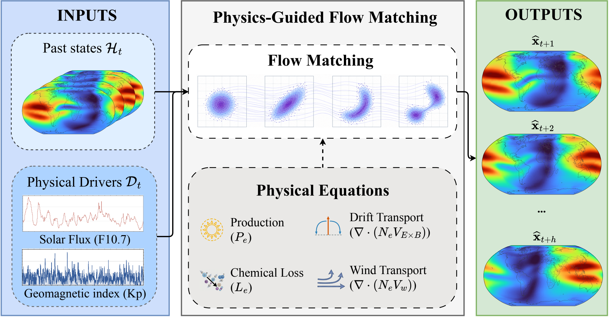

Skip to content
03 / PUBLICATIONS
Papers &
preprints.
“Nature does not reveal all her secrets at once.”

View full figure ↗2026 / PREPRINTSi-Tong Yang, Feng Ye, Xian Lu, Dong Lin, and Benjamin C. Martinez
arXiv:2610.37159 · Preprint · 27 October 2026